بعد المرحلة الثالثة صارت «يومك» لعبة ويب متكاملة تُلعب من البداية إلى النهاية، بالعربية والإنجليزية، على الحاسوب والهاتف. تضم 6 محطات و18 موقفاً و18 بطاقة حكم. وتحميها مجموعة اختبارات آلية تراقب صحة المحتوى وسلامته، ومسار لعب كامل في متصفح بلا واجهة.
npm test، و0 متجاوز. أعدتُ تشغيلها بنفسي: 177 ناجحة و0 فاشلةنجاح الاختبارات يثبت أن النصوص الشرعية منقولة حرفياً ومنسوبة إلى مصادرها، وأن الواجهة تعرضها دون تحريف. لكنه لا يثبت صحة الأحكام. الأحكام الثمانية عشر ما زالت مسودة ذكاء اصطناعي مدققة آلياً، وأربعة منها ai_draft، ولم يراجعها عالم بشري بعد. واللعبة تعرض ذلك للاعب صراحة: «بانتظار مراجعة عالم».
المصادر: docs/phase-3/qa_report.md docs/phase-3/e2e_results.json README.md docs/SOURCES.md tests/ package.json، وسجل git، وتشغيل وكيل التوثيق لـnpm test في 2026-10-05.
الهدف أن يتحول ما بُني في المرحلتين السابقتين إلى نسخة مستقرة قابلة للتسليم. والمقصود بالمرحلتين المحتوى والمحرك في الأولى، والمشاهد في الثانية. ويتحقق ذلك بخمسة أمور:
| الجزء | حالته بعد التكامل |
|---|---|
المحتوى (content/rulings، content/script) | 18 حكماً و18 موقفاً، تُحمّل وقت البناء. ولم يُغيَّر أي ملف سيناريو أو حكم في هذه المرحلة. |
المحرك (src/engine) | يمر التدفق كاملاً: البداية، ثم المقدمة والتنبيهات، ثم المحطات الست، ثم الملخص. ويُحفظ التقدم، ويمكن الاستئناف بعد إعادة التحميل. |
المشاهد الست (src/scenes) | كلها حقيقية، ولا مشهد بديلاً. ولا نقطة تفاعل توضع آلياً، و0 تحذيرات من المشاهد أو المحتوى. |
الاختبارات (tests/) | content.test.mjs، safety.test.mjs، audit.test.mjs، ومعها أدوات مساعدة (helpers/)، ومسار لعب كامل (e2e/playthrough.mjs). |
| الأدوات | tools/serve.mjs: خادم ثابت بلا اعتماديات لتشغيل dist/. وtools/audit/sources_md.mjs: يولّد docs/SOURCES.md. |
| التوثيق والمستودع | README.md ثنائي اللغة، و.gitignore، وأوامر جديدة في package.json. ومستودع git فيه الإيداع الأول. |
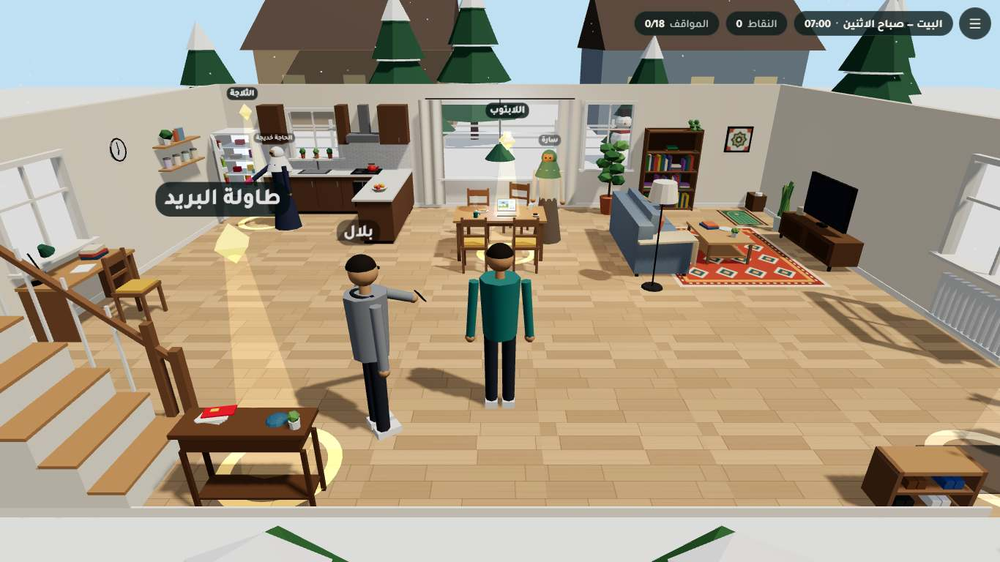
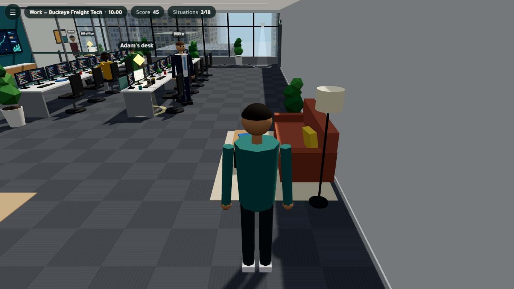
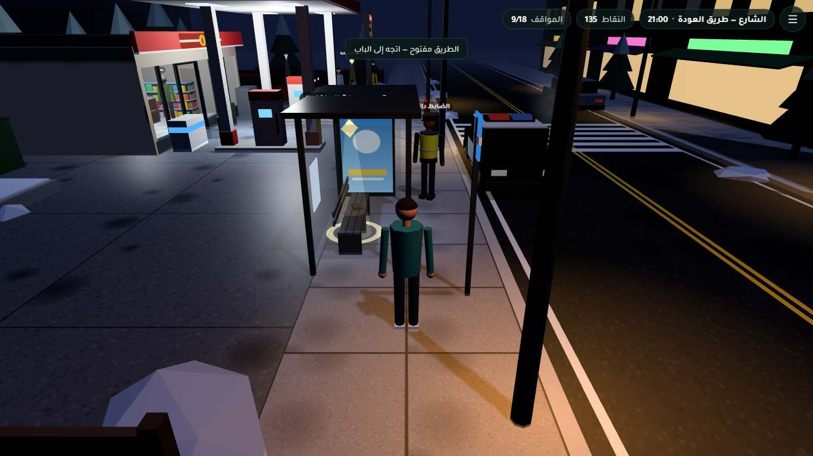
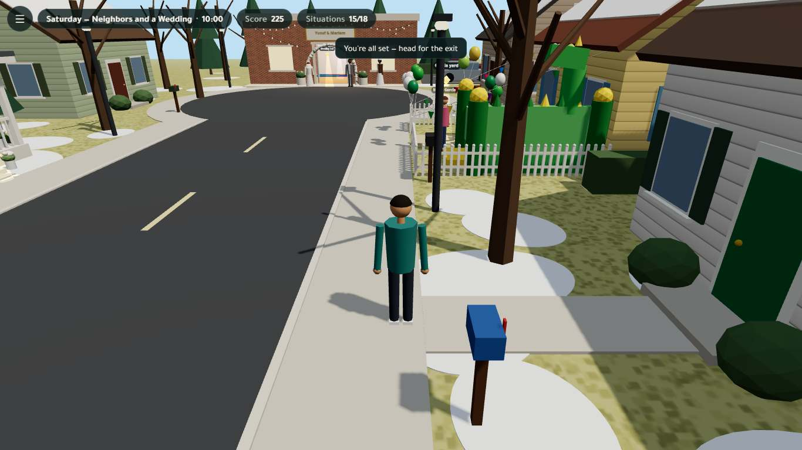
كل لقطات هذا التقرير من docs/phase-3/screenshots/، وقد التقطها مسار e2e آلياً. وفيه 254 لقطة.
| المجموعة | الأمر | النتيجة |
|---|---|---|
| اختبارات الوحدة وعقد المحتوى والسلامة، ومعها تغليف أداة التدقيق | npm test | 177 / 177 ناجحة، و0 متجاوز. وشغّلت أداة التدقيق verify.mjs من ذاكرتها: 187 فحصاً، كلها ناجحة. |
مسار لعب كامل في Chrome بلا واجهة، يُخدم من dist/ دون Vite | npm run test:e2e | 4 / 4 إعدادات ناجحة، و0 إخفاقات. و90 عرضاً لبطاقة الحكم طوبق مع JSON. |
| بناء الإنتاج | npm run build | نجح. وجُرّب dist/ أيضاً من مسار فرعي (/dist/) بلا أخطاء. |
| الإعداد (e2e) | النتيجة | إخفاقات | تحذيرات | بطاقات حكم فُحصت | المدة (ث) |
|---|---|---|---|---|---|
desktop-ar | ناجح | 0 | 0 | 36 | 85 |
desktop-en | ناجح | 0 | 0 | 18 | 72 |
mobile-ar | ناجح | 0 | 0 | 18 | 82 |
mobile-en | ناجح | 0 | 0 | 18 | 86 |
من docs/phase-3/e2e_results.json (2026-10-05T18:38:01.410Z، الرسم d3d11، أقصى نقاط 270، والمواقف 18). الحاسوب 1366×768. والهاتف 390×844 بكثافة بكسل 2، مع اللمس ووكيل مستخدم Android. وسجّل desktop-ar 36 بطاقة لأنه يعيد لعب كل موقف. وكل تشغيل كامل يستغرق نحو خمس دقائق ونصف على معالج Intel UHD 620.
| الفحص | حاسوب عربي | حاسوب إنجليزي | هاتف عربي | هاتف إنجليزي |
|---|---|---|---|---|
شاشة البداية، وأزرار اللغة، وسمتا dir وlang | ✔ | ✔ | ✔ | ✔ |
| المقدمة فيها 4 تنبيهات على الأقل | ✔ | ✔ | ✔ | ✔ |
| المشاهد الست حقيقية، ولا نقطة تفاعل موضوعة آلياً، و0 تحذيرات | ✔ | ✔ | ✔ | ✔ |
| كل نقطة تفاعل (18) وكل مخرج (6) يُبلغ مشياً من البداية | ✔ | ✔ | ✔ | ✔ |
| التفاعل بمفتاح E أو بزر اللمس | ✔ | ✔ | ✔ | ✔ |
| المخرج مقفل حتى تنتهي المحطة | ✔ | ✔ | ✔ | ✔ |
| الخيارات المعروضة هي خيارات السيناريو بعد الخلط، مع شارة النقاط | ✔ | ✔ | ✔ | ✔ |
| بطاقة الحكم كاملة ومطابقة لـ JSON (انظر أدناه) | ✔ | ✔ | ✔ | ✔ |
| التبديل بين تبويبات المذاهب على الشاشة الضيقة | — | — | ✔ | ✔ |
| سؤال الفهم: تمييز الإجابة الصحيحة، ومسار الإجابة الخاطئة | ✔ | ✔ | ✔ | ✔ |
| «جرّب خياراً آخر» في المواقف الـ18 كلها | ✔ | — | — | — |
| إعادة زيارة نقطة منتهية ثم «مراجعة بطاقة الحكم» | ✔ | ✔ | ✔ | ✔ |
| حفظ التقدم، ثم إعادة التحميل، ثم «متابعة» تستأنف من محطة العمل مع اللغة | ✔ | ✔ | ✔ | ✔ |
| تبديل اللغة من القائمة، وانقلاب الاتجاه في الاتجاهين | ✔ | — | — | — |
| الملخص: 270 نقطة، و18/18، و18 خياراً أفضل، و18 إجابة فهم صحيحة | ✔ | ✔ | ✔ | ✔ |
| لا تمرير أفقي في البداية والمقدمة والحوار والبطاقة والملخص | ✔ | ✔ | ✔ | ✔ |
| 0 أخطاء في وحدة التحكم والصفحة، و0 طلبات فاشلة | ✔ | ✔ | ✔ | ✔ |
| 3 أضواء نقطية على الأكثر لكل مشهد، ولا ضوء يلقي ظلاً | ✔ | ✔ | ✔ | ✔ |
| مسح الكاميرا: 8 زوايا عند كل نقطة تفاعل | —* | ✔ | ✔ | ✔ |
«—» تعني أن الفحص لا يُجرى في هذا الإعداد. و* مسح الكاميرا في desktop-ar اختياري بالخيار --camera.
في كل عرض للبطاقة يتحقق الاختبار من هذه العناصر:
npm test)content.test.mjs):
null، وكل موقف يُلعب مرة واحدة.ruling_id موجود، وكل نقطة تفاعل معرّفة في hotspots.md وفي المشهد.safety.test.mjs): تفصيلها في القسم التالي.audit.test.mjs): يشغّل verify.mjs.
تحدد صفحة «المصادر والموثوقية» في وثيقة التحدي متطلبات المحتوى: سجلاً لكل نص، والامتناع، والخلاف، والإحالة. وتطلب «اختبار السلامة» بأربع حالات: اختلاق حديث، وسؤال بلا مرجع، وتعارض مصادر، وتجاوز تعليمات. وتضع هدفاً هو اجتياز الحالات الحرجة (الامتناع والإحالة والإسناد) بنسبة 100%. والجدول يربط كل متطلب بما يحققه في اللعبة وبالاختبار الذي يحرسه.
| المتطلب في الوثيقة | كيف تحققه «يومك» | الاختبار الآلي | الحالة |
|---|---|---|---|
| الإسناد: سجل لكل نص (النص، والمرجع، والموضع، والدرجة، وحالة المراجعة) | لكل آية رقمها ورابطها، ولكل حديث كتابه ورقمه وراويه ودرجته ورابطه. وسجل مصادر موحد فيه 209 مداخل: content/sources.json ثم docs/SOURCES.md. | اختبار الإسناد يفحص:
SOURCES.md مع السجل. | ✔ |
| لا اختلاق (اختلاق حديث) | النصوص تُجلب آلياً، ويطابقها المدقق حرفاً وحركة: 27/27 آية و64/64 استشهاداً حديثياً. والمحرك يعرضها دون تغيير. |
| ✔ |
| الامتناع عند غياب المصدر (سؤال بلا مرجع) | النص غير المتحقق منه يُترك فارغاً، ويُذكر السبب للمراجع. والحكم الغائب تظهر مكانه بطاقة «المحتوى قيد الإعداد». |
| ✔ |
| عرض الخلاف ببيان المراجع (تعارض مصادر) | المذاهب الأربعة جنباً إلى جنب، كل قول مع مرجعه، ومعها المجامع المعاصرة. والوسمان «مختلف فيه» و«يختلف بحسب الحال» لما فيه خلاف. |
| ✔ |
| الإحالة إلى مختص | حقل «متى تسأل عالماً» في كل حكم. وشاشة الملخص تختم بالتذكير بسؤال عالم موثوق أو إمام المسجد. |
| ✔ |
| صدق حالة المراجعة | الوسمان ai_draft وai_verified كلاهما يُعرض «بانتظار مراجعة عالم». |
| ✔ |
| فصل القصة عن الحكم (منع توليد نصوص منسوبة إلى القرآن والسنة) | السيناريست لا يكتب نصاً شرعياً، ويحيل بـruling_id فقط. | 11 كاشفاً تمر على كل نص في content/script/*.json، منها:
| ✔ |
| تجاوز التعليمات | في النسخة الحالية لا يوجد نموذج لغوي يستقبل نصاً حراً من المستخدم، فالمحتوى JSON ثابت. وتُدرج النصوص عبر textContent، وتُعرض روابط http(s) فقط. | اختبار العارض: روابط javascript: وdata: لا تُعرض أبداً. أما اختبار حقن التعليمات بمعناه الكامل فيخص طبقة «سؤال وجواب» المخطط لها، وستصير اختبارات السلامة الحالية مجموعة تقييمها. | ✔ / ⏳ |
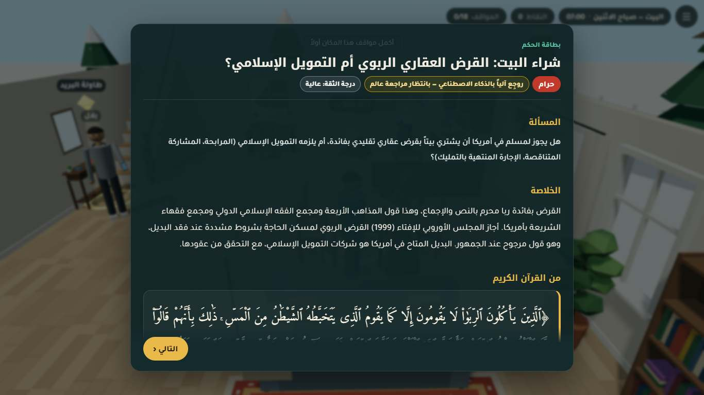
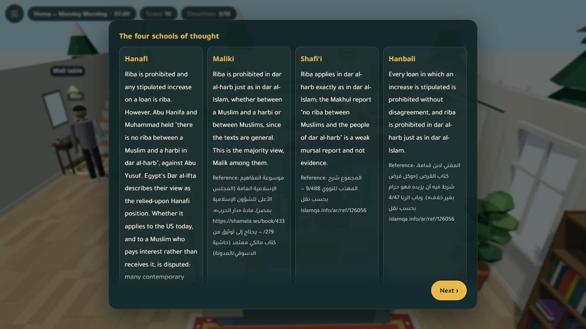
وجد وكيل التكامل والجودة 11 خطأً وأصلحها، وكل التعديلات في الشيفرة معلّمة بـPhase 3 QA. ولم يُعدَّل أي ملف سيناريو أو حكم.
| # | الخطأ | الإصلاح والأثر |
|---|---|---|
| 1 | كاميرا العمل خلف الجدار الغربي: عند البداية وقرب آلة القهوة كان جدار رمادي يملأ الكادر. رصده وكيل التوثيق في المرحلة الثانية. | جدران المشهد مكررة (InstancedMesh)، فلم يكن المحرك يعدّها حواجز للكاميرا. فأُضيفت صناديق بديلة غير مرئية للجدران المعتمة الأربعة، تُمرَّر عبر cameraOccluders (src/scenes/work.js). وصار الحجب عند مكتب الموارد البشرية 1/8 زوايا بعد أن كان 4/8، وصارت البداية تُظهر المكتب. |
| 2 | آدم مختفٍ تماماً عند كاونتر محطة الوقود في الشارع: كانت 7 من 8 زوايا للكاميرا محجوبة. | صناديق بديلة لجدران المتجر وسقفه. فصار الحجب 0/8، والكاميرا تبقى داخل المتجر (src/scenes/street.js). |
| 3 | حدود الأضواء: البيت 4، والشارع 5، والمناسبات العامة 5، والكلية 7، والحد 3. | القرار: الخفض إلى 3 على الأكثر، والإبقاء على حد الدليل، لأنه لا يوجد هاتف متوسط حقيقي يثبت أن الأضواء الزائدة رخيصة. والصور قبل الخفض وبعده متطابقة تقريباً، والممر في الكلية أغمق قليلاً. ويوجد الآن فحص e2e لهذه الميزانية. |
| 4 | BiDi في البطاقة الإنجليزية: المراجع العربية (كتب المذاهب، والرواة، والدرجات، وأسماء المجامع) داخل فقرات من اليسار إلى اليمين، فاختلّ ترتيب العلامات و«» والأرقام والروابط. | تُغلَّف القيم بـ<bdi dir="auto"> (src/engine/ui/rulingCard.js). |
| 5 | شاشة الملخص: عنوانها ونقاطها مقصوصان وغير قابلين للتمرير، في كل أحجام الشاشات. | صار align-items:flex-start، ومعه margin:auto. وأُضيف فحص يمنع عودة الخطأ: عنوان الملخص يجب أن يظهر داخل الشاشة. |
| 6–8 | تخطيط الهاتف: الإشعارات فوق الصف الثاني من الشريط العلوي، وتبويبات المذاهب ملتفة 3 + 1، وشارة الحكم تضغط عناوين الملخص، ومربعات الإحصاء تفيض. | أُزيحت الإشعارات تحت الشريط. وصارت التبويبات شبكة من 4 أعمدة. ونُقلت الشارة تحت العنوان، وصارت الإحصاءات شبكة 2×2 (src/styles/main.css). |
| 9 | الإشعارات والشريط العلوي تُرسم فوق الشاشات الكاملة (الملخص والبداية). | تُخفى حين تكون شاشة كاملة معروضة. |
| 10 | الإشعارات مفروضة من اليسار إلى اليمين، فتنقلب الرسائل العربية. | صار unicode-bidi:plaintext; text-align:start. |
| 11 | في الحفل كانت خلفية المساء تظهر شريطاً تحت حافة الأرضية. | صار لون السماء sky: '#24171a'. |
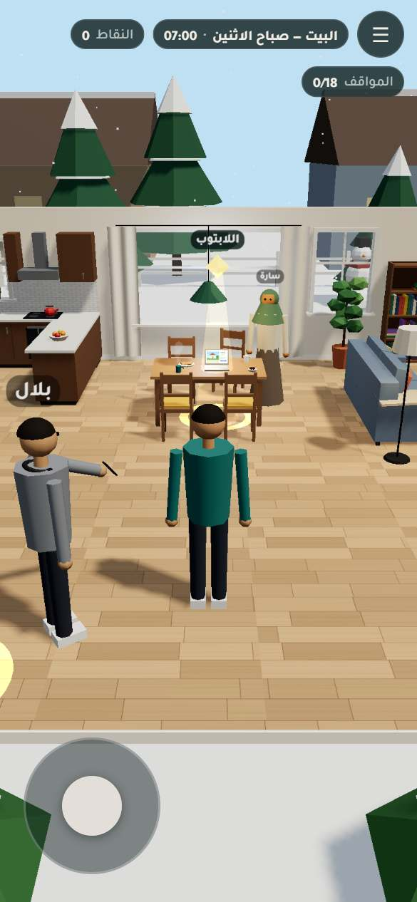
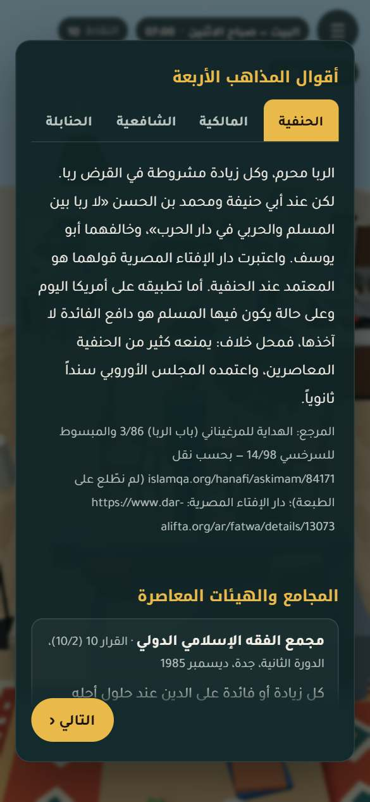
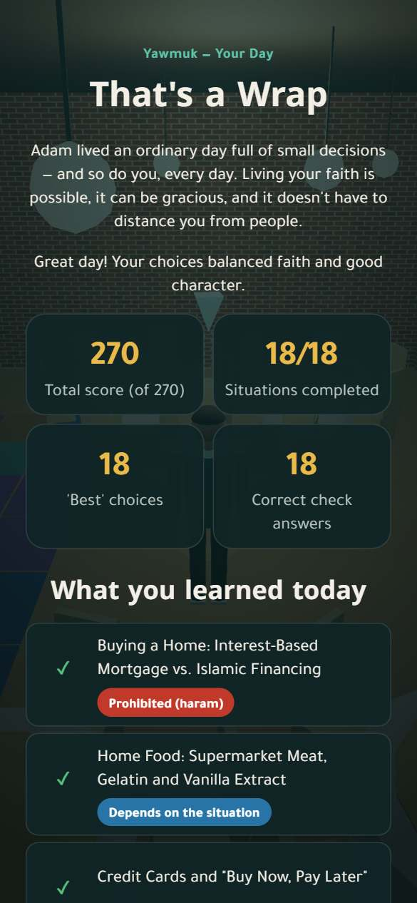
وتحقق الوكيل أيضاً من أمور وجدها سليمة:
قيس الأداء داخل اللعبة على جذر كل مشهد، في إعداد desktop-en. والمثلثات هنا محسوبة مع النسخ المكررة.
| المشهد | شبكات | منها مكررة | مثلثات | استدعاءات رسم لكل إطار حاسوب / هاتف | أضواء نقطية | صناديق تصادم | حواجز كاميرا |
|---|---|---|---|---|---|---|---|
البيت home | 89 | 0 | 15.8k | 114 / 81 | 3 | 32 | 10 |
العمل work | 113 | 11 | 13.5k | 112 / 51 | 0 | 42 | 14 |
الكلية school | 202 | 25 | 17.7k | 226 / 170 | 3 | 64 | 32 |
الشارع street | 124 | 7 | 12.1k | 153 / 109 | 3 | 46 | 39 |
المناسبات العامة public_events | 253 | 35 | 48.9k | 236 / 114 | 3 | 70 | 48 |
المناسبات الخاصة private_events | 201 | 16 | 57.8k | 209 / 205 | 2 | 70 | 18 |
ملاحظة منهجية: الدالة yawmuk.stats() لا تضرب الشبكات المكررة في عدد نسخها. لذلك كانت أرقام المثلثات التي نقلها تقرير المرحلة الثانية من قياس وكيل التوثيق أقل من الحقيقة في العمل والكلية والمناسبات العامة. والجدول أعلاه يصحح ذلك.
npm run build، dist/ = 1.4 MB)| الجزء | الحجم | gzip |
|---|---|---|
three | 687.5 kB | 177.2 kB |
index (المحرك والواجهة، ومعها كل ملفات المحتوى JSON مضمّنة) | 571.9 kB | 181.0 kB |
| CSS | 14.3 kB | 4.3 kB |
| المشاهد (تحميل كسول، ملف لكل محطة) | 22–32 kB لكل منها | 8.7–12.2 kB |
حجم التحميل الأول نحو 365 kB مضغوطاً، إضافة إلى خطوط Google. وإن تعذّر تحميل الخطوط تعمل اللعبة بخطوط النظام العربية.
المستودع git محلي فيه إيداع واحد: be85b1f بعنوان «Initial commit: Yawmuk («يومك») 3D fiqh-of-daily-dealings game, phases 1-3». وفيه 392 ملفاً، ولا يوجد مستودع بعيد بعد. ويتطلب Node 22 أو أحدث (engines في package.json).
| الأمر | الوظيفة |
|---|---|
npm install | تثبيت الاعتماديات: three، ولبيئة التطوير vite وpuppeteer-core. |
npm run dev | خادم التطوير على http://localhost:5173. والمعاملات ?scene=home&nointro=1&lang=en&debug=1 تقفز مباشرة إلى محطة. |
npm run build | يبني dist/ ثابتاً، بقاعدة ./، فيعمل من أي استضافة أو مسار فرعي. |
npm run serve:dist | يخدم dist/ بخادم صغير بلا اعتماديات على http://127.0.0.1:4173. |
npm test | اختبارات الوحدة وعقد المحتوى والسلامة (node:test، بلا متصفح). |
npm run test:e2e | مسار لعب كامل في Chrome بلا واجهة: 18 موقفاً، بالعربية والإنجليزية، على الحاسوب والهاتف. |
npm run audit | يعيد التحقق من كل نص قرآني وحديثي مع مصدره، ويفحص الروابط. يحتاج الشبكة. |
npm run sources | يعيد توليد docs/SOURCES.md من content/sources.json. |
الأوامر منقولة من package.json وREADME. والأمر node --test "tests/*.test.mjs" هو أمر الاختبار الفعلي.
README.md: ثنائي اللغة. فيه وصف اللعبة، وتنبيه حالة المراجعة باللغتين، والمحطات والمواقف، والتشغيل والاختبار، والنشر، والبنية، ومنهجية المحتوى، وفريق الوكلاء، وخارطة الطريق، والترخيص.docs/SOURCES.md: سجل المصادر مولّد آلياً. فيه 209 مداخل، 92 منها موثقة، وتفصيلها:docs/: وثيقة الفريق، وكتاب القصة، ودليل نقاط التفاعل، وملاحظات البحث، والتدقيق، وتقارير المراحل.reports/phase-1..3.pdf: تقارير المراحل الثلاث، ومصادرها في reports/src/..gitignore لأنه وثيقة المنظمين.لم يُنشر أي شيء حتى الآن، ولا يوجد رابط مباشر. واللعبة تطبيق ثابت بصفحة واحدة بلا خادم ولا موجّه، ويُبنى بـnpm run build. وقد جُرّب dist/ من الجذر ومن مسار فرعي بلا أخطاء.
في README تعليمات لثلاثة أنواع من الاستضافة:
npm ci && npm run build ثم ينشر dist/. ولأن القاعدة ./ تعمل تحت https://<user>.github.io/<repo>/.npm run build، ومجلد النشر dist. أو يُسحب المجلد ويُفلت في Netlify Drop.القرارات المطلوبة من الفريق قبل النشر:
| القضية | التفصيل |
|---|---|
| لا مراجعة من عالم بعد | لم يراجع عالم بشري أياً من الأحكام الثمانية عشر. وأربعة منها ما زالت ai_draft: home.food_ingredients، work.alcohol_pork_job، private_events.wedding، private_events.gifts_birthday. والقائمة المرتبة بالأولوية في docs/audit/phase1_audit.md §4 وفي تقرير المرحلة الأولى. |
| مراجع غير مطابقة على المطبوع | 72 مرجعاً مذهبياً و45 مرجعاً معاصراً لم تُطابق على طبعات محددة (docs/SOURCES.md). |
| حجب جزئي للكاميرا | ما زال مسح الزوايا الثماني يجد حجباً جزئياً في بعض النقاط:
|
| لم تُختبر على |
|
| محتوى (رُفع ولم يُغيَّر) |
|
| المحرك والأدوات |
|
| قياس النفع | تقترح وثيقة التحدي اختباراً أولياً مع 8 مشاركين على الأقل من الفئة المستهدفة، بأهداف: إكمال 70%، ووضوح الخطوة التالية 75%، والحالات الحرجة 100%. ولم يُجرَ هذا الاختبار بعد. والحالات الحرجة مغطاة آلياً فقط. |
review_status: "scholar_reviewed" مع اسم المراجع والتاريخ.| المرحلة | أبرز ما أُنجز |
|---|---|
| 1 — الأساس |
|
| 2 — المشاهد |
|
| 3 — التكامل والجودة |
|
| بند التسليم في الوثيقة | الحالة | ✔ / ⏳ |
|---|---|---|
| منتج ويب متكامل (رحلة يوم في المتصفح على الحاسوب والهاتف) | يعمل من البداية إلى النهاية في 4 إعدادات | ✔ |
| مكتبة من 12 إلى 20 موقفاً مراجعاً | 18 موقفاً، داخل النطاق. مراجعتها آلية، ومراجعة العالم البشري معلّقة. | ✔ |
| سجل المصادر | docs/SOURCES.md: 209 مداخل، 92 منها موثقة | ✔ |
| مجموعة اختبارات | npm test: 177/177. وnpm run test:e2e: 4/4 | ✔ |
| التوثيق | README، وتقارير المراحل الثلاث، ووثائق البحث والتدقيق | ✔ |
| مستودع GitHub عام | مستودع محلي فيه إيداع واحد، ولا مستودع بعيد بعد | ⏳ |
| رابط مباشر | جاهز للنشر، ولم يُنشر، بانتظار قرار الفريق | ⏳ |
| فيديو | مخطط، ولم يُنتج بعد | ⏳ |
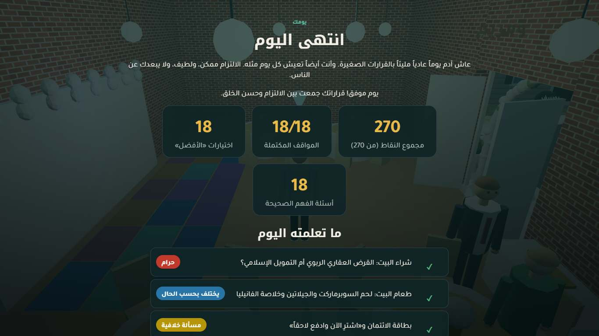
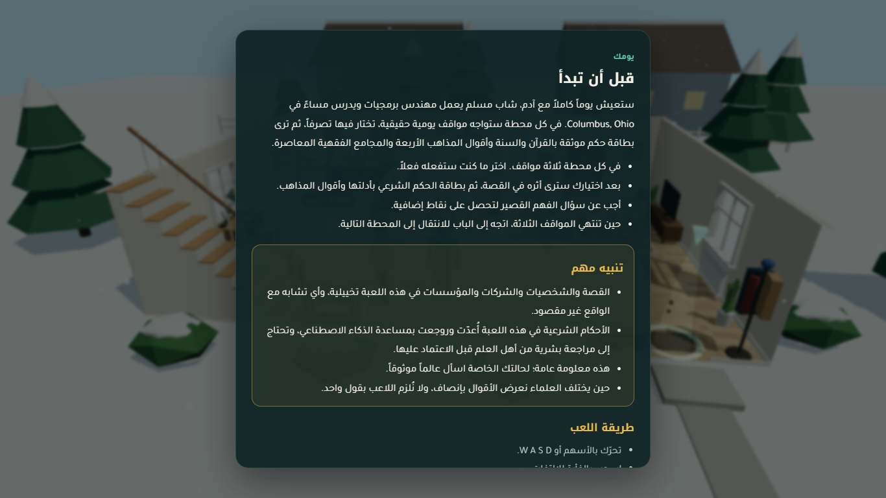
«يومك» جاهزة تقنياً ومحمية بالاختبارات. لكن قيمتها الشرعية تتوقف على خطوة لم تحدث بعد: مراجعة عالم شرعي بشري للأحكام الثمانية عشر. فكل حكم فيها مسودة ذكاء اصطناعي دُققت آلياً، واللعبة تقول ذلك للاعب في كل بطاقة.
— نهاية تقرير المرحلة الثالثة —